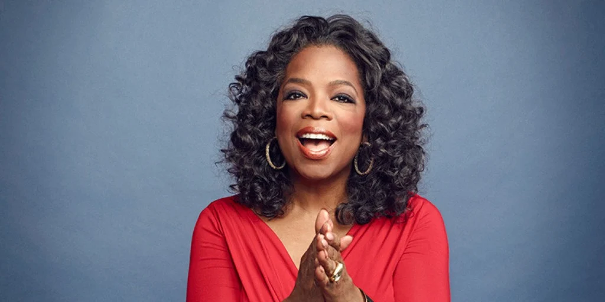

My name is Nadine Jodie Fortuin and I am a 24 year old
student. In todays life with the generation as well as Technology that is constantly changing, things are definitely changing for the better, however, for some for the worse. For most Young Women, they grew up with mother figures which could tell them right from wrong while some females didn't have much of a mother figure around to show them the way. I created this Blog mainly for the females today who didn't get the life advices of some elderly figures or people who are to ashamed to admit they are struggling or who are to proud to ask for help. I know in today's life not just males, but females too are really quick to judge, hence the reason why the suicide rate for females are so high or having that fear leads them to either be depressed or have some mental health issues. That's why I have created this blog so that women from all over can interact with each other.
Admin March 4,
2021
Society then compared to now.
Growing up, I've always been accustomed to focusing on studies but also focusing on maintaining a balanced lifestyle between schol, chores, family and friends. Back then, I've experienced more skinned knees than broken hearts as compared to young teenagers these days who has had more heartbreaks than I had in one lifetime. Society then has totally changed compare to now. I think mostly that social media and public figures/influencers today plays a big role considering most of the kids today grow up with the mentality or feel as if they have the need to resemble their biggest role model with the fakest bodies and pretty faces. Back then, nobody really cared much about how they looked because back then, if you had brains to delegate and a personality/manner to make a room stop the moment you walk in, you had everything.

Admin March 4,
2021
My Female Inspiration: Oprah Winfrey
I might speak for many when I say that Oprah Winfrey is my role model considering her harsh upbringing. She is one of the most powerful woman around all thanks to her network which she has and also the horrible things she had to endure as a small girl/young adolescent. I guess the reason why she stands out most to me is because of despite how horrible your ubringing might've been, where you go and what you make of yourself is totally up to you as a person. In today's life, it isn't easy. For some it is, for some not but in the end, there is light at every tunnel. She has inspired many to do good and be good and she has inspired me a lot considering I don't have a squeaky clean past, but that doesn't matter at all considering I have an end goal to focus on. One of the greatest lessons learnt from her is that no matter how bad your past was, where you are headed in your future should be your main goal/focus.